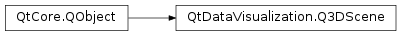

QtDataVisualization.Q3DScene¶
Synopsis¶
Functions¶
- def
activeCamera() - def
activeLight() - def
devicePixelRatio() - def
graphPositionQuery() - def
isPointInPrimarySubView(point) - def
isPointInSecondarySubView(point) - def
isSecondarySubviewOnTop() - def
isSlicingActive() - def
primarySubViewport() - def
secondarySubViewport() - def
selectionQueryPosition() - def
setActiveCamera(camera) - def
setActiveLight(light) - def
setDevicePixelRatio(pixelRatio) - def
setGraphPositionQuery(point) - def
setPrimarySubViewport(primarySubViewport) - def
setSecondarySubViewport(secondarySubViewport) - def
setSecondarySubviewOnTop(isSecondaryOnTop) - def
setSelectionQueryPosition(point) - def
setSlicingActive(isSlicing) - def
viewport()
Signals¶
- def
activeCameraChanged(camera) - def
activeLightChanged(light) - def
devicePixelRatioChanged(pixelRatio) - def
graphPositionQueryChanged(position) - def
primarySubViewportChanged(subViewport) - def
secondarySubViewportChanged(subViewport) - def
secondarySubviewOnTopChanged(isSecondaryOnTop) - def
selectionQueryPositionChanged(position) - def
slicingActiveChanged(isSlicingActive) - def
viewportChanged(viewport)
Static functions¶
- def
invalidSelectionPoint()
Detailed Description¶
-
class
PySide2.QtDataVisualization.QtDataVisualization.Q3DScene([parent=nullptr])¶ Parameters: parent – PySide2.QtCore.QObject
-
PySide2.QtDataVisualization.QtDataVisualization.Q3DScene.activeCamera()¶ Return type: PySide2.QtDataVisualization.QtDataVisualization::Q3DCamera
-
PySide2.QtDataVisualization.QtDataVisualization.Q3DScene.activeCameraChanged(camera)¶ Parameters: camera – PySide2.QtDataVisualization.QtDataVisualization::Q3DCamera
-
PySide2.QtDataVisualization.QtDataVisualization.Q3DScene.activeLight()¶ Return type: PySide2.QtDataVisualization.QtDataVisualization::Q3DLight
-
PySide2.QtDataVisualization.QtDataVisualization.Q3DScene.activeLightChanged(light)¶ Parameters: light – PySide2.QtDataVisualization.QtDataVisualization::Q3DLight
-
PySide2.QtDataVisualization.QtDataVisualization.Q3DScene.devicePixelRatio()¶ Return type: PySide2.QtCore.float
-
PySide2.QtDataVisualization.QtDataVisualization.Q3DScene.devicePixelRatioChanged(pixelRatio)¶ Parameters: pixelRatio – PySide2.QtCore.float
-
PySide2.QtDataVisualization.QtDataVisualization.Q3DScene.graphPositionQuery()¶ Return type: PySide2.QtCore.QPoint
-
PySide2.QtDataVisualization.QtDataVisualization.Q3DScene.graphPositionQueryChanged(position)¶ Parameters: position – PySide2.QtCore.QPoint
-
static
PySide2.QtDataVisualization.QtDataVisualization.Q3DScene.invalidSelectionPoint()¶ Return type: PySide2.QtCore.QPoint
-
PySide2.QtDataVisualization.QtDataVisualization.Q3DScene.isPointInPrimarySubView(point)¶ Parameters: point – PySide2.QtCore.QPointReturn type: PySide2.QtCore.bool
-
PySide2.QtDataVisualization.QtDataVisualization.Q3DScene.isPointInSecondarySubView(point)¶ Parameters: point – PySide2.QtCore.QPointReturn type: PySide2.QtCore.bool
-
PySide2.QtDataVisualization.QtDataVisualization.Q3DScene.isSecondarySubviewOnTop()¶ Return type: PySide2.QtCore.bool
-
PySide2.QtDataVisualization.QtDataVisualization.Q3DScene.isSlicingActive()¶ Return type: PySide2.QtCore.bool
-
PySide2.QtDataVisualization.QtDataVisualization.Q3DScene.primarySubViewport()¶ Return type: PySide2.QtCore.QRect
-
PySide2.QtDataVisualization.QtDataVisualization.Q3DScene.primarySubViewportChanged(subViewport)¶ Parameters: subViewport – PySide2.QtCore.QRect
-
PySide2.QtDataVisualization.QtDataVisualization.Q3DScene.secondarySubViewport()¶ Return type: PySide2.QtCore.QRect
-
PySide2.QtDataVisualization.QtDataVisualization.Q3DScene.secondarySubViewportChanged(subViewport)¶ Parameters: subViewport – PySide2.QtCore.QRect
-
PySide2.QtDataVisualization.QtDataVisualization.Q3DScene.secondarySubviewOnTopChanged(isSecondaryOnTop)¶ Parameters: isSecondaryOnTop – PySide2.QtCore.bool
-
PySide2.QtDataVisualization.QtDataVisualization.Q3DScene.selectionQueryPosition()¶ Return type: PySide2.QtCore.QPoint
-
PySide2.QtDataVisualization.QtDataVisualization.Q3DScene.selectionQueryPositionChanged(position)¶ Parameters: position – PySide2.QtCore.QPoint
-
PySide2.QtDataVisualization.QtDataVisualization.Q3DScene.setActiveCamera(camera)¶ Parameters: camera – PySide2.QtDataVisualization.QtDataVisualization::Q3DCamera
-
PySide2.QtDataVisualization.QtDataVisualization.Q3DScene.setActiveLight(light)¶ Parameters: light – PySide2.QtDataVisualization.QtDataVisualization::Q3DLight
-
PySide2.QtDataVisualization.QtDataVisualization.Q3DScene.setDevicePixelRatio(pixelRatio)¶ Parameters: pixelRatio – PySide2.QtCore.float
-
PySide2.QtDataVisualization.QtDataVisualization.Q3DScene.setGraphPositionQuery(point)¶ Parameters: point – PySide2.QtCore.QPoint
-
PySide2.QtDataVisualization.QtDataVisualization.Q3DScene.setPrimarySubViewport(primarySubViewport)¶ Parameters: primarySubViewport – PySide2.QtCore.QRect
-
PySide2.QtDataVisualization.QtDataVisualization.Q3DScene.setSecondarySubViewport(secondarySubViewport)¶ Parameters: secondarySubViewport – PySide2.QtCore.QRect
-
PySide2.QtDataVisualization.QtDataVisualization.Q3DScene.setSecondarySubviewOnTop(isSecondaryOnTop)¶ Parameters: isSecondaryOnTop – PySide2.QtCore.bool
-
PySide2.QtDataVisualization.QtDataVisualization.Q3DScene.setSelectionQueryPosition(point)¶ Parameters: point – PySide2.QtCore.QPoint
-
PySide2.QtDataVisualization.QtDataVisualization.Q3DScene.setSlicingActive(isSlicing)¶ Parameters: isSlicing – PySide2.QtCore.bool
-
PySide2.QtDataVisualization.QtDataVisualization.Q3DScene.slicingActiveChanged(isSlicingActive)¶ Parameters: isSlicingActive – PySide2.QtCore.bool
-
PySide2.QtDataVisualization.QtDataVisualization.Q3DScene.viewport()¶ Return type: PySide2.QtCore.QRect
-
PySide2.QtDataVisualization.QtDataVisualization.Q3DScene.viewportChanged(viewport)¶ Parameters: viewport – PySide2.QtCore.QRect
© 2018 The Qt Company Ltd. Documentation contributions included herein are the copyrights of their respective owners. The documentation provided herein is licensed under the terms of the GNU Free Documentation License version 1.3 as published by the Free Software Foundation. Qt and respective logos are trademarks of The Qt Company Ltd. in Finland and/or other countries worldwide. All other trademarks are property of their respective owners.